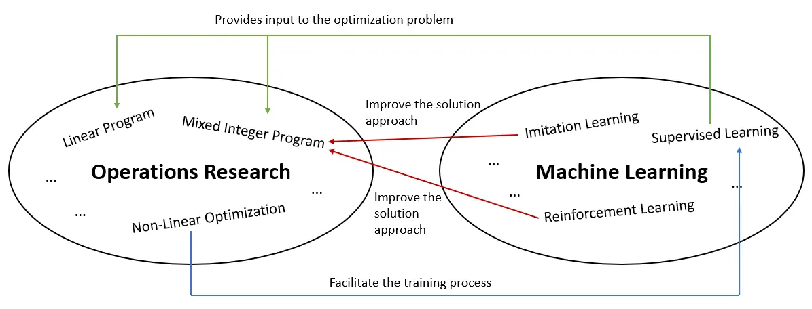

Tổng quan về Operation Research trong thời đại AI
Posted: 21/03/2026
Dù đã có lịch sử phát triển hơn 80 năm và dần phổ biến trên thế giới, Operations Research (OR - Vận trù học) vẫn là một cái tên khá mới mẻ tại Việt Nam. Với nhiều người, khái niệm này còn xa lạ, thậm chí dễ gây khó hiểu khi lần đầu nghe đến. Một phần lý do là trước đây OR chủ yếu xuất hiện trong các chương trình đào tạo về Cử nhân toán, ít được phổ biến trong các nhóm ngành khác. Tuy nhiên, trong những năm gần đây, khi các doanh nghiệp lớn như XanhSM, Viettel hay các sàn thương mại điện tử bắt đầu đối mặt với những bài toán tối ưu hóa chi phí và logistics ngày càng phức tạp, nhu cầu về nhân sự OR mới thực sự bùng nổ.
Trong bài viết này, chúng ta sẽ cùng tìm hiểu Operation Research (OR) là gì, khám phá những ý tưởng cốt lõi của nó, và cùng làm quen với một số công cụ và kỹ thuật mà nó cung cấp. Tiếp đó, chúng ta sẽ cùng tìm hiểu vai trò và sự kết nói của OR trong thế giới của Machine Learning (ML) và AI, cùng với cách mà optimization - cốt lõi (core) của OR cũng là một trong những nền tảng chính đứng sau nhiều thuật toán của ML.
Operation Research là gì?
Về cơ bản, Operation Research là một lĩnh vực của toán ứng dụng sử dụng “các mô hình toán học” (mathematical modelling) để giúp con người và tổ chức đưa ra “những quyết định tốt hơn” (making decision). Lĩnh vực này thường được gọi là optimization. Tuy nhiên, thuật ngữ này có thể gây hiểu nhầm, vì “optimization” được sử dụng trong nhiều ngữ cảnh khác nhau, từ code optimization đến hyperparameter optimization đến pipeline optimization, mà không nhất thiết tương ứng với mathematical modelling trong OR.
Trong tiếng Việt, Operations Research thường được gọi là “Vận trù học”. Thuật ngữ này được Giáo sư Toán học Hoàng Tụy sử dụng lần đầu, là sự kết hợp giữa “vận hành” (operations) và “trù liệu” (research). Nghe thì có vẻ hơi “học thuật”, nhưng thực chất lại gắn rất gần với những quyết định mà chúng ta phải đưa ra mỗi ngày.
Từ những việc quen thuộc như sắp xếp lịch làm việc, lên kế hoạch di chuyển, cho đến các bài toán phức tạp hơn trong doanh nghiệp như Hoạch định Sản xuất (Production Planning), Phân bổ Nguồn lực (Resource Allocation) hay Tối ưu Lợi nhuận (Profit Optimization), tất cả đều xoay quanh một câu hỏi chung: làm thế nào để đạt được kết quả tốt nhất trong điều kiện có hạn? Bởi vì trong thực tế, chúng ta hiếm khi có đủ mọi thứ. Thời gian thì giới hạn, ngân sách có hạn, nhân lực cũng không phải vô tận. Khi hoạt động kinh doanh ngày càng phức tạp, việc ra quyết định không thể chỉ dựa vào kinh nghiệm hay cảm tính, mà cần đến những phương pháp khoa học và công cụ phân tích bài bản hơn. Về bản chất, hầu hết các quyết định đều là bài toán chọn “phương án tốt nhất” từ nhiều khả năng, trong khi phải cân bằng giữa các đánh đổi (trade-offs) và những ràng buộc (constraints) có sẵn. Ví dụ:
- Giám đốc Sản xuất (production manager) quyết định cách sắp xếp máy móc và công nhân để tối đa hóa sản lượng (Job Shop Scheduling Problem)
- Một trường đại học tìm cách xếp lịch học để tránh trùng lịch cho sinh viên và quá tải cho giảng viên (Scheduling Problem)
- Một nhà quy hoạch giao thông đô thị thiết kế tuyến xe buýt phục vụ được nhiều người nhất, mà không chạy xe rỗng suốt cả ngày (Vehicle Routing Problem / Network Design Problem)
- Một nhà bán lẻ quyết định nên giữ bao nhiêu hàng tồn kho để không bị hết hàng, nhưng cũng không lãng phí tiền vào việc tồn kho dư thừa. (Inventory Optimization Problem)
- Một hãng hàng không đặt giá vé đủ cao để có lợi nhuận mà không phải bay với ghế trống (Revenue Management / Dynamic Pricing Problem)
- Một nhà đầu tư chọn danh mục đầu tư cân bằng giữa rủi ro và lợi nhuận (Portfolio Optimization Problem)
Phần kỹ thuật của OR là một câu chuyện dài hơn nhiều. Với những người làm trong lĩnh vực này (Data Scientist, Consultant, OR Specialist, hoặc đơn giản là Operations Researchers), công việc thường xoay quanh ba trụ cột:
- Data Analytics - để hiểu bài toán và khám phá các mẫu (pattern)
- Mathematical Programming - để tìm ra quyết định tốt nhất dưới các ràng buộc đã cho
- Simulation - để kiểm tra và phân tích cách một giải pháp hoạt động trong các kịch bản khác nhau
Đằng sau các trụ cột này là một kho công cụ rất lớn. Cơ bản nhất, ta có các phương pháp chính xác như Linear Programming, Integer Programming, và Dynamic Programming - dành cho những bài toán có cấu trúc rõ ràng và có thể giải ở quy mô lớn. Sau đó là các phương pháp lặp (iteration), dựa trên gradient cho các bài toán tối ưu liên tục. Khi bài toán trở nên quá phức tạp đối với các phương pháp chính xác, Heuristics và Metaheuristics (Genetic Algorithms, Tabu Search) cung cấp các lời giải tốt trong thời gian hợp lý mà không đảm bảo tối ưu tuyệt đối. Constraint Programming là một cách tiếp cận khác, hoạt động bằng cách thu hẹp không gian tìm kiếm, mà không nhất thiết cần một hàm mục tiêu rõ ràng. Stochastic Optimization hoặc Robust Optimization cung cấp các kỹ thuật để đưa ra quyết định vẫn hiệu quả trong điều kiện không chắc chắn. Cuối cùng, Simulation-based Optimization sử dụng việc thử nghiệm nhiều kịch bản để xác định các chiến lược hoạt động trung bình tốt nhất.
Công cụ
Có nhiều công cụ để triển khai các phương pháp và mô hình này trong thực tế. Thông thường, ta bắt đầu bằng cách viết một mô hình toán học bằng các modelling system như Pyomo, PuLP, CVXPY của Python, JuMP của Julia, SMS++ của C++,... Sau đó, các mô hình này được giải bằng các solver như CPLEX, Gurobi, Highs, CBC,...
Đối với heuristics và metaheuristics, ta có thể tự xây dựng hoặc sử dụng các thư viện có sẵn: DEAP (Evolutionary Algorithms), Simanneal (Simulated Annealing), hoặc Networkx (Graph-based Optimization) trong Python; Jenetics (Genetic Algorithms) hoặc Watchmaker Framework (Evolutionary Computation) trong Java. Ngoài ra còn có các thư viện chuyên biệt cho từng bài toán như python-tsp và pyLKH cho Traveling Salesman Problem, hoặc PySchedule cho bài toán lập lịch. Đối với các bộ công cụ tổng quát hơn, Google OR-Tools, Hexaly cung cấp nhiều loại bài toán sẵn có.
Khi yếu tố bất định (uncertainty) xuất hiện, ta có thể tìm đến các phần mở rộng của stochastic programming như Pyomo hoặc pysp trong Python, StochasticPrograms.jl của Julia. Đối với constraint programming, hiện có các solvers mạnh như OR-Tools CP-SAT, IBM CP Optimizer và Choco-solver (Java). Ngoài ra, các công cụ như SimPy, Arena hoặc AnyLogic cho phép ta khám phá hàng ngàn kịch bản "giả định" (what-if) thông qua mô phỏng, nhằm tối ưu hóa hiệu suất trong những điều kiện không chắc chắn.
Điểm đặc biệt là các công cụ này không hoạt động riêng lẻ mà thường được kết hợp linh hoạt: modelling system cung cấp framework chính, solver tìm giải pháp tối ưu, heuristics tạo các điểm khởi đầu tốt hoặc xử lý bài toán quá phức tạp, và mô phỏng giúp đánh giá độ bền vững của giải pháp trong thực tế. Nhờ vậy, các nhà phân tích và OR Specialists có thể đưa ra quyết định hiệu quả, khả thi và gần như tối ưu, ngay cả trong những môi trường kinh doanh phức tạp và thay đổi liên tục.
Ngoài ra, ta còn có những Algebraic Modeling Languages (AML) chuyên dụng, giúp biểu diễn bài toán tối ưu hóa gần với công thức toán học, tách biệt việc mô hình hóa với việc giải quyết bằng solver. Những ngôn ngữ này đặc biệt hữu ích khi bài toán có nhiều biến, ràng buộc phức tạp hoặc cần thử nghiệm nhiều kịch bản. Tiêu biểu có thể kể đến AMPL cho các bài toán LP, IP, MIP, MILP, có thể giải bằng nhiều solver như CPLEX, Gurobi, Highs,... GAMS (General Algebraic Modeling System), hỗ trợ đa dạng LP, MIP, MILP và Stochastic Programming, tích hợp nhiều solver và có cộng đồng người dùng doanh nghiệp lớn. AIMMS tập trung vào xây dựng các ứng dụng tối ưu hóa cho doanh nghiệp với giao diện đồ họa và khả năng tích hợp dữ liệu thực tế.
Học OR ở đâu?
Tài liệu
Về tài liệu, có rất nhiều giáo trình hiện nay trên thị trường, nhưng có 2 bộ sách phổ biến nhất được đưa làm tài liệu tham khảo cho rất nhiều chương trình đào tạo và các giáo sư khuyến nghị sử dụng là Convex Optimization của Stephen Boyd và Vandenberghe và Nummerical Optimziation của Jorge Nocedal và Wright. Đây là những giáo trình cơ bản, giúp bạn nắm vững các khái niệm cốt lõi mà hầu hết các thuật toán OR, ML hay DL đều dựa vào. Đối với bản thân mình thì 2 sách này viết quá chi tiết, minh họa đầy đủ, giải thích kỹ càng, đủ để bạn có thể đọc hiểu khi chưa có nền tảng sẵn. Một số khái niệm được giới thiệu trong sách bao gồm: Convexity, Duality, Gradient Descent, Newton's Method, Hessian, learning rate/step size, convergence / termination criteria,... Dĩ nhiên, bạn không cần phải đọc hết sách. Đụng tới khái niệm nào thì có thể tra cứu trong sách cũng được.
Sau khi có kiến thức cơ bản về tối ưu rồi, bạn có thể tìm đọc thêm sách về OR và Mathematical Programming. Giáo trình kinh điển mà mình hay thấy mọi người sử dụng bao gồm Optimization in Operations Research của Ronald Rardin, Operations Research: An Introduction của Hamdy Taha, và Introduction to Operations Research của Hillier & Lieberman. Mỗi cuốn sách mang một thế mạnh riêng, và khi kết hợp lại, chúng tạo thành một nền tảng vững chắc cho người học OR. Cuốn của Taha thường được dùng khi bạn chưa biết gì về OR cả, nó được trình bày trực quan, nhiều ví dụ thực tế và dễ tiếp cận với người mới. Sách của Hillier & Lieberman đi sâu vào cả lý thuyết lẫn mô hình hơn, cung cấp một cái nhìn toàn diện về các mô hình LP, IP, DP,... Ở mức nâng cao hơn, sách của Rardin lại nổi bật ở cách tiếp cận mang tính khái quát và có hệ thống, giúp bạn hiểu rõ cấu trúc của các bài toán tối ưu và cách mà các methods liên kết với nhau để giải nó. Cuốn sách này sẽ hữu ích nếu như bạn bắt đầu quan tâm đến việc thiết kế thuật toán, hoặc muốn nhìn OR dưới góc độ "framework" thay vì chỉ là các bài toán rời rạc. Điểm chung của các tài liệu này không chỉ dừng lại ở việc trình bày mô hình, mà còn giúp bạn hiểu tư duy tối ưu hóa đằng sau mỗi bài toán, từ cách xây dựng mô hình, lựa chọn phương pháp giải, cho đến việc diễn giải và áp dụng kết quả vào thực tế. Vì vậy, nếu bạn nghiêm túc theo đuổi OR, đây là những cuốn sách rất đáng để đầu tư thời gian.
Online course
Hiện nay có rất nhiều khóa học trên internet mà bạn có thể tự tìm hiểu và theo học. Tùy vào nền tảng và mục tiêu của mình, bạn có thể chọn các khóa introduction, đi sâu về thuật toán, hoặc tập trung vào từng bài toán cụ thể trong OR. Dưới đây là một số khóa học mình tổng hợp lại tham khảo từ TS Vũ Đức Minh, trường Đại học Kinh tế Quốc dân:
- Operations Research (1): Models and Applications - Coursera
- Operations Research (2): Optimization Algorithms - Coursera
- Operations Research (3): Theory - Coursera
- Solving Algorithms for Discrete Optimization - Coursera
- Discrete Optimization - Coursera
- Approximation Algorithms (Part I) - Coursera
- Approximation Algorithms - Coursera
- Game Theory - Coursera
- Basic Modeling for Discrete Optimization - Coursera
- Advanced Modeling for Discrete Optimization - Coursera
- Delivery Problem - Coursera
Trường Đại học
Ngoài ra, nếu bạn muốn học OR một cách bài bản hơn, có thể tìm đến các chương trình đào tạo chính quy tại các trường đại học. Nếu bạn muốn học ở Mỹ, bạn có thể tham khảo các top school về OR như MIT, Arizona State, UT Austin, UT Dallas, Indiana University, Georgia Tech. Ở châu Âu, đặc biệt là Pháp, bạn có thể tham khảo chương trình M2 Optimization của Paris-Saclay và Institut Polytechnique de Paris, khóa này khá nặng về toán và thuật toán, tuy nhiên trường có hệ thống lab với nhiều đề tài nghiên cứu để bạn phát triển sâu hơn. Một khóa khác cũng nổi tiếng là M2 Modeling, Optimization, Decision-Making, and Organization (MODO) của Paris-Dauphine, nếu tốt nghiệp thì bạn có thể tận dụng độ uy tín từ hệ thống Université PSL ở Paris. Ngoài ra, còn có Master of Operations Research, Combinatorics and Optimization (ORCO) của Grenoble INP, trường có nhiều giáo lớn và network rộng với các tập đoàn như Schneider Electric, Artélys, Hexaly,... vốn sử dụng rất nhiều nhân lực mảng OR.
Tại Việt Nam, ở thời điểm hiện tại vẫn chưa có chương trình đào tạo chính quy về Operations Research. Hiện tại, chỉ có ngành Kỹ thuật Hệ thống Công nghiệp (Industrial and Systems Engineering - ISE) tại Đại học Bách Khoa - Đại học Quốc gia TP.HCM (VNU) hoặc Đại học Quốc tế (VNU) là có chuyên ngành OR. Nếu bạn muốn đi sâu hơn về lý thuyết tối ưu, các chương trình Toán, đặc biệt tại Đại học Khoa học Tự nhiên (VNU), cũng là một hướng đáng cân nhắc. Nổi bật có chương trình Thạc sĩ Toán ứng dụng Việt-Pháp, phù hợp nếu bạn có background toán mạnh. Ngoài ra, phần lớn các chương trình Khoa học máy tính hiện nay cũng đều có ít nhiều các học phần liên quan đến optimization, đặc biệt trong các môn về Machine Learning hoặc thuật toán.
Về các nhóm nghiên cứu, bạn có thể tham khảo một số lab đang hoạt động trong lĩnh vực này. Tiêu biểu có OR Lab ở Đại học Phenikaa nghiên cứu và ứng dụng OR, với nhiều đề tài liên quan đến logistics, scheduling,... MSO Lab ở Đại học Bách Khoa Hà Nội tập trung vào tối ưu thuật toán và tính toán hiệu năng cao (high-performance computing). Và còn rất nhiều nhóm/lab nghiên cứu khác nữa mà có thể mình chưa biết tới.
Về mặt học thuật, khi nhắc đến OR tại Việt Nam, không thể không nhắc tới Giáo sư Hoàng Tụy, người đặt nền móng cho lĩnh vực này, với đóng góp nổi bật là phương pháp lát cắt Tụy (Tuy’s cut) trong tối ưu toàn cục. Bên cạnh đó, Giáo sư Nguyễn Đông Yên tại Viện Toán học cũng là một trong những nhà nghiên cứu tiêu biểu trong lĩnh vực tối ưu.
OR trong thời đại AI và ML
Machine Learning (ML) là một nhánh của Artificial Intelligence (AI), tập trung vào việc phát triển các thuật toán và mô hình cho phép máy tính học các patterns từ dữ liệu và cải thiện hiệu suất của chúng theo thời gian mà không cần được lập trình tường minh.

Mặc dù ML nhận được nhiều sự chú ý và thường dễ tiếp cận hơn so với OR, hai lĩnh vực này thường được đem ra so sánh như những cách tiếp cận khác nhau. Nhưng khi nhìn sâu hơn, có thể thấy chúng hoàn toàn không phải đối thủ - mà ngược lại, bổ trợ cho nhau và hoạt động hiệu quả nhất khi kết hợp. Vì vậy, ta có thể đặt OR trong góc nhìn của ML - hoặc ngược lại. Thế mạnh của ML nằm ở việc đưa ra dự đoán, gợi ý và phân loại. Những đầu ra này sau đó được sử dụng bởi các hệ thống tối ưu hóa để đưa ra các quyết định tốt hơn.
Ví dụ:
- Một nhà bán lẻ sử dụng ML để dự báo nhu cầu sản phẩm từ dữ liệu mua hàng trong quá khứ. OR sau đó sử dụng dự báo này để xác định chính sách đặt hàng tối ưu.
- Netflix sử dụng ML để dự đoán khả năng bạn sẽ xem một chương trình nào đó. OR sau đó giúp tối ưu hóa sự kết hợp giữa nội dung quen thuộc và nội dung mới trong các đề xuất.
- Một hãng hàng không sử dụng ML để dự đoán các chuyến bay bị trễ dựa trên xu hướng dữ liệu gần đây. OR sau đó điều chỉnh kế hoạch hiện tại để sắp xếp lại lịch bay và tổ bay theo thời gian thực.
Tóm lại:
- ML trả lời câu hỏi: “Điều gì sẽ xảy ra?”
- OR trả lời câu hỏi: “Chúng ta nên làm gì với điều đó?”
ML cũng có thể được sử dụng kết hợp với nhiều kỹ thuật tối ưu hóa khác nhau để cải thiện hiệu suất của chúng.
Reinforcement Learning (RL) cho phép hệ thống học từ kinh nghiệm, trong khi OR đảm bảo các quyết định vẫn hiệu quả và khả thi. Ví dụ, trong bài toán định dynamic pricing hoặc scheduling, AI thích nghi với những thay đổi theo thời gian thực, còn OR áp dụng các ràng buộc cần thiết.
ML cũng sử dụng các phương pháp heuristics bằng cách áp dụng Neural Network để học từ các lời giải chất lượng cao hoặc tạo ra các điểm khởi đầu tốt (initial point), sau đó các solver OR sẽ tiếp tục tinh chỉnh. Điều này đặc biệt hữu ích trong các bài toán phức tạp như routing hoặc scheduling, nơi việc tìm lời giải chính xác là rất tốn kém về mặt tính toán.
Trong simulation-based optimization, ML giúp phân tích đầu ra từ hàng nghìn kịch bản để phát hiện xu hướng và hỗ trợ các mô hình OR hiệu quả hơn. Các mô hình thay thế (surrogate models) như Gaussian Processes hoặc Neural Network có thể xấp xỉ các mô phỏng phức tạp nhằm giảm chi phí tính toán. Các phương pháp khác như Reinforcement Learning và Graph Neural Network (GNNs) giúp nắm bắt cấu trúc dữ liệu và tập trung tìm kiếm vào những vùng có khả năng cao (potential region). Ngoài ra, các kỹ thuật Scenario Reduction như Clustering hoặc Autoencoders giúp xác định các scenario quan trọng nhất, cải thiện cả tốc độ và chất lượng quyết định trong điều kiện không chắc chắn (uncertainty).
Đi xa hơn, Generative AI có thể hỗ trợ quá trình ra quyết định bằng cách giúp chúng ta hiểu yêu cầu và cấu trúc các bài toán thực tế phức tạp, cũng như chuyển chúng thành các mô hình toán học. Ví dụ, xử lý ngôn ngữ tự nhiên (NLP) có thể trích xuất các ràng buộc từ tài liệu không có cấu trúc, các thuật toán Clustering có thể phân nhóm nhu cầu, và Deep Learning có thể tạo ra các dự báo chính xác làm đầu vào cho các mô hình tối ưu hóa. Nói cách khác, Gen AI giúp chúng ta xây dựng (formulate) bài toán quyết định (mặc dù vẫn còn một chặng đường dài để tự động hóa hoàn toàn việc này).
Tuy nhiên, việc xây dựng mô hình chỉ là một nửa câu chuyện. Khi bài toán đã được biểu diễn dưới dạng toán học - như Linear Programing, Mixed-integer Programming, hoặc mô hình Stochastic Optimization, thì việc giải nó đòi hỏi các thuật toán và solver từ Operations Research.
Bên cạnh đó, optimization cũng đóng vai trò quan trọng trong việc phát triển nhiều thuật toán học máy. Trong ML, optimization cho phép mô hình học bằng cách tìm ra tập tham số (parameters) tốt nhất để tối thiểu hóa (minimize) hoặc tối đa hóa (maximize) một hàm mục tiêu (objective function), chẳng hạn như loss function. Gradient descent và các biến thể của nó là những phương pháp phổ biến dùng để cập nhật trọng số trong các mô hình hồi quy hoặc Neural Network.
Một số thuật toán như Support Vector Machine (SVM) sử dụng Convex Optimization để tìm ra một nghiệm tối ưu duy nhất, trong khi regularization thêm các điều khoản phạt để tránh overfitting. Các kỹ thuật khác bao gồm expectation-maximization để xử lý các biến ẩn, tối ưu hóa decision tree để chọn điểm chia tốt nhất, và Bayesian optimization để điều chỉnh hyperparameters.
Trong Reinforcement Learning, optimization tập trung vào việc cải thiện chiến lược nhằm tối đa hóa phần thưởng dài hạn. Nhìn chung, optimization chính là yếu tố giúp các thuật toán ML liên tục cải thiện và đạt được kết quả tốt hơn.
Những nguyên lý optimization này cũng chính là nền tảng toán của nhiều kỹ thuật trong Operations Research, cho thấy mối liên hệ sâu sắc giữa hai lĩnh vực.
Kết lại
Gen AI giúp cấu trúc bài toán và tạo ra insight, ML cung cấp dự báo và các mẫu dữ liệu, còn OR đảm bảo những đầu vào này được chuyển hóa thành các quyết định khả thi, hiệu quả, và thường là tối ưu dưới các ràng buộc thực tế. Trong khi những tiến bộ của AI và ML sẽ mở ra nhiều cơ hội mới để tích hợp với tối ưu hóa, việc khai thác hết tiềm năng của chúng đòi hỏi sự hiểu biết vững chắc về các kỹ thuật OR và biết cách áp dụng chúng đúng chỗ. Bởi vì cuối cùng, dữ liệu và dự đoán chỉ thực sự có giá trị khi chúng dẫn đến những quyết định đúng đắn - và đó chính là nơi OR tạo ra sự khác biệt.